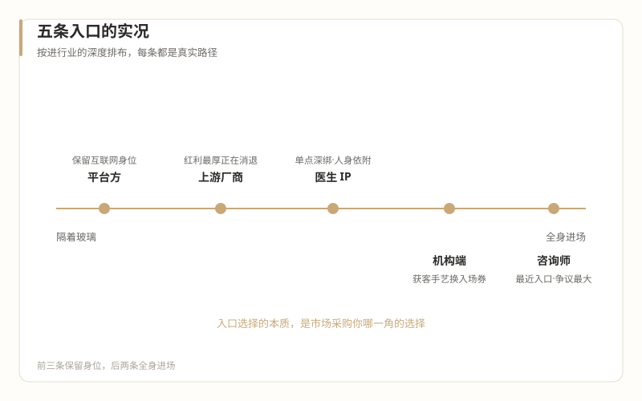

2怎么进
五条入口的实况
本篇回答：大厂人进医美，实际有哪几条路，各是什么处境。每条入口按五个要素拆：岗位画像、真实日常、准入难度、天花板、适配背景。

先说一个总的实况
在拆五条入口之前，先记住一句话，它能帮你校准所有预期：
"医美人对互联网关心的核心只有一个：获客。"（《又见中台——关于医美互联网中台的假设》，2023-04-11）
这句话的上下文还有一句更扎心的："医美行业其实从来就没有出现过像样的中台。"围绕机构的软件服务商和电商平台都不少，但"这两类公司均采用了可以快速变现的商业模式"。（同文）
含义很直接：行业欢迎互联网人，但多数机构欢迎的是你的获客手艺，不是你的方法论、你的中台经验、你的"平台思维"。你带着一整套职业自豪感进场，市场愿意采购的可能只有其中一角。五条入口的差别，本质上就是"市场采购你哪一角"的差别。
入口一：平台方——严格说，你没离开互联网
岗位画像：新氧、美团医美、抖音本地生活等平台的医美线，岗位是运营、商业化、行业治理、产品。你的同事还是互联网人，工作语言还是 DAU、ROI、GMV。
真实日常：平台侧看医美，是一个垂直类目的流量生意。你要处理的是机构和医生在平台上的经营问题、内容合规问题、交易纠纷。
准入难度：对大厂人最低——这就是一次普通的跳槽。
天花板：延续互联网职业路径。但注意两点实况：平台是行业利润的第二层（"最赚钱的是上游，第二赚钱的是下游三方平台"——《乱象之外》，2025-07-22），日子比机构好过；但机构端投产比已卷到 ROI 1:1、平台开始下场自营（"新氧下场做青春诊所，京东下场做医美机构"，同文），平台与机构客户既是合作方又是竞争者，这条业务线的长期故事待观察。
适配背景：想先隔着玻璃看行业、保留互联网身位的人。这是事实上的"观察哨"入口——在平台做两年医美类目，行业认知攒够了再决定要不要真的跳进去。
入口二：机构端——真正"进行业"的那一跳
岗位画像：民营机构的运营、营销、新媒体、会员经营，远期是经营院长方向。这是本系列的主线场景，第 02-04 篇的结构分析全部适用于它。
真实日常：嘴端的工作——获客、投放、内容、活动、转化。行业老手给这个序列的定位极其明确："大型医美机构最重要的工作除了医疗就是营销"，《什么人能当医美机构的经营院长？（一）》，2018-10-26）；经营院长的数据使命就一句话："不断地获取流量，并且让流量变现。"（同文）你的日常会是：盯投放、写文案（合规红线内）、做活动、跟咨询师对口径、向老板解释为什么这个月客人少了。
准入难度：中等。机构对"互联网背景"有真实需求（获客焦虑是普遍的），但开出的职位常常名不副实——"运营总监"可能就是管两个新媒体小编。职级通胀在这里是真实存在的，谈 offer 时按第 09 篇的清单尽调。
天花板：经营院长。但看清这个职位的实况（第 04 篇）：KPI 极重、医疗决策无权、出身通道偏营销和咨询、冲突时先被牺牲。大厂管理者把这个当"总经理"来理解，会摔得很疼。
适配背景：有增长实操（真投过钱、真背过转化指标）、能下现场、能接受从执行层重新证明自己的人。
入口三：上游厂商——行业利润最高层的旁观者席位
岗位画像：玻尿酸、肉毒毒素、光电设备厂商的市场部、数字营销、培训教育岗。
真实日常：节奏接近快消——学术会议、机构拜访、医生教育、品牌活动。医疗属性弱于机构端，你面对的是 B 端客户（机构和医生），不是求美者。
准入难度：对有品牌 marketing 背景的大厂人较低，对纯互联网运营背景中等。
天花板：市场总监一级。上限受两个现实约束：一，上游最舒服的红利期（"取得械三等于暴利"）正在结束，合规产品超过百种后"上游赛道"自己也卷起来了（《乱象之外》，2025-07-22）；二，上游向中游渗透的动作（连锁加盟捆绑模式，同文）会让市场岗位的工作内容越来越"重"。
适配背景：品牌 marketing、B 端市场出身，想沾行业红利但不想碰机构端脏活的人。代价是：你在行业里，但永远在交付现场之外——医疗端的手艺、纠纷、人情，隔着一张会议桌。
入口四：医生 IP 运营 / MCN——新需求，但是不均匀的需求
岗位画像：帮医生做个人品牌——账号运营、内容策划、患者教育物料。形态多样：机构内的 IP 岗位、服务多家机构的 MCN、医生工作室的合伙人式搭档。
真实日常：选题、拍摄、剪辑、合规审核、账号运营、把流量接进机构转化链路。
准入难度：对内容运营出身的人最低，作品集说话。但两个实况要先知道：
一是需求真实但不均匀。头部医生 IP 是行业共识级的方向——"让医生个人 IP 插上 AI 的翅膀"（《表达者红利》，2025-06-17）。但中小机构"没有特别固定的医生，或者老板担心医生不稳定，不愿意为医生投资做个人 IP"（《电商医美的悖论》，2025-04-01）——医生带流量走人的风险，机构老板算得比你精。
二是传播悖论（第 02 篇）在这里是日常合规课："真正内行的人不允许说，不懂的外行人什么都可以说"（同文）。医生 IP 内容的第一约束不是流量是合规，你能说的范围远小于美妆账号。
天花板：成为"医生的左膀右臂"（《医美咨询师成长教程》援引语料的设计判断）或自营 MCN。高度人身依附：IP 做成了，跟医生走；医生流失，账号清零。这是一条把个人职业信用押在单个医生身上的路，选之前想清楚。
适配背景：内容运营、新媒体出身，享受从零到一、能接受人身依附结构的人。
入口五：咨询师——最近的入口，最需要想清楚的入口
零背景转行者最常被递过来的岗位。它最容易进，也最有争议，语料对它的三句话（第 04 篇详述）必须再摆一次：
- 不是国家承认的正式职业，2021 年曾被政协提案建议取缔，因"名义上做咨询、实际上做推销"（《两会提案：取缔医美咨询师》，2021-03-09）；
- 咨询师主导医疗决策的时代已结束，新标准是"成单与医生决策的匹配度"（《医美咨询师，请做时间的朋友》，2020-06-23）；
- 不见面的网电咨询会被 AI 全面替代，留下的是面对面的情绪价值（《情绪价值——AI 时代医美咨询师的贡献》，2024-11-05）。
可以考虑的情况：你把咨询师当"认识行业的学费岗位"（干 12-18 个月，练脸皮、学语言、攒客户认知，然后转运营/医务助理/IP 方向）；目标机构是医生主导型（考核看匹配度不看大单）；你在面对面场景里如鱼得水。
不要碰的情况：你想长期做网电咨询（这是被 AI 明确点名的淘汰区）；你把它当职业终点（岗位本身正在被重新定义，法律身份悬而未决）；你不能接受收入与"卖出去多少"深度挂钩（咨询师收入普遍含提成，这一结构本身就是第 12 篇张力话题的源头）。
如果走这条入口，《医美咨询师成长教程》（20 课，为转行者设计的十二个月成长路径）就是现成的自学教材，不必另寻门路。
五条入口对照表
| 入口 | 进行业的深度 | 市场采购你的什么 | 主要风险 | 适合谁 |
|---|---|---|---|---|
| 平台方 | 隔玻璃 | 互联网本行技能 | 类目政策与自营化变数 | 想先观察的人 |
| 机构端 | 全身进场 | 获客与流量手艺 | 薄利行业、老板文化、KPI 扭曲 | 有增长实操、能下现场 |
| 上游厂商 | 半场内 | 品牌 marketing | 红利期已过、卷起来的甲乙方 | marketing 出身 |
| 医生 IP | 深入但单点 | 内容与运营 | 人身依附、合规窄门 | 内容出身、愿绑定医生 |
| 咨询师 | 全身进场 | 沟通与转化 | 岗位法律身份悬置、AI 替代网电端 | 零背景起步、当跳板用 |
键盘 ← → 可翻篇，手机屏幕左右边缘滑动同样有效